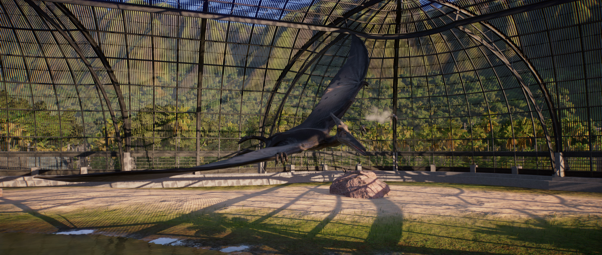

Pteranodon is one of the largest pterosaurs ever to have existed with a wingspan stretching up to 7m, and is easily recognisable thanks to the crest on the top of its skull, which it uses for display purposes. Although its diet consists largely of fish, Pteranodon does not have teeth, chewing its prey with its beak – in fact, its name translates to ‘wing toothless’.